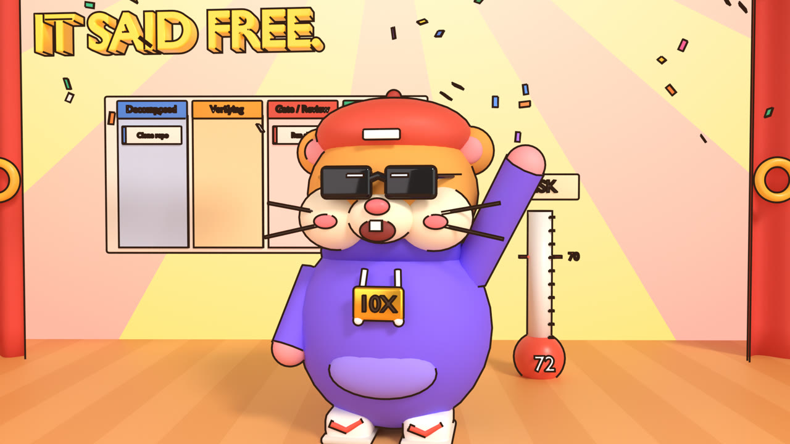
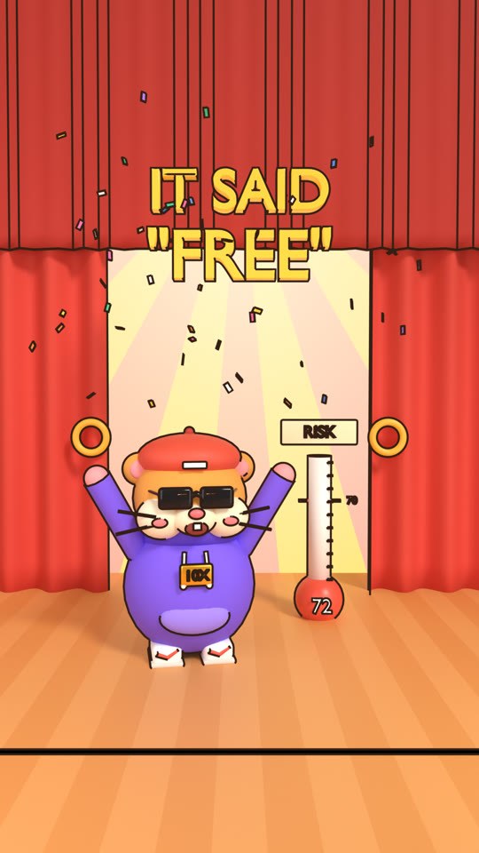
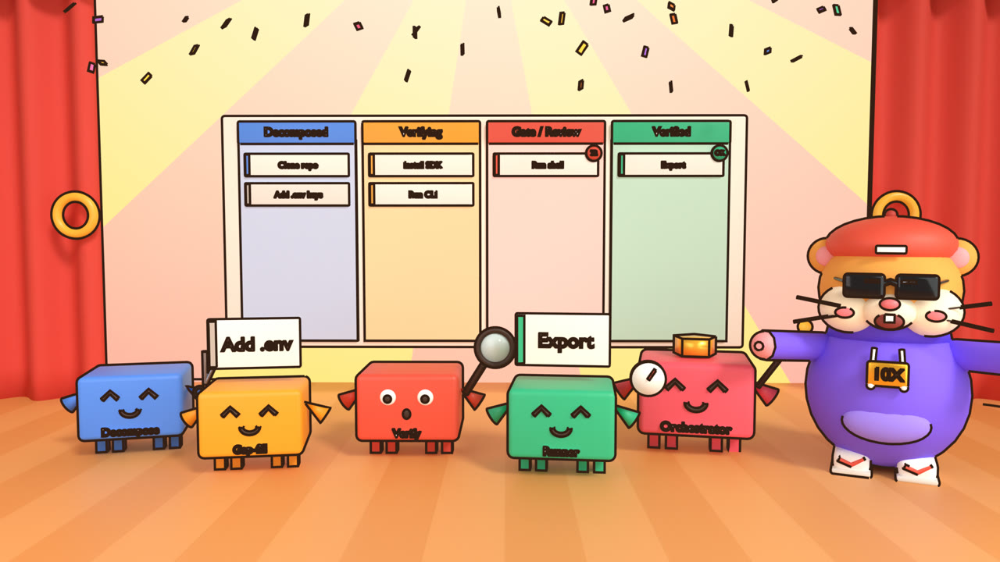
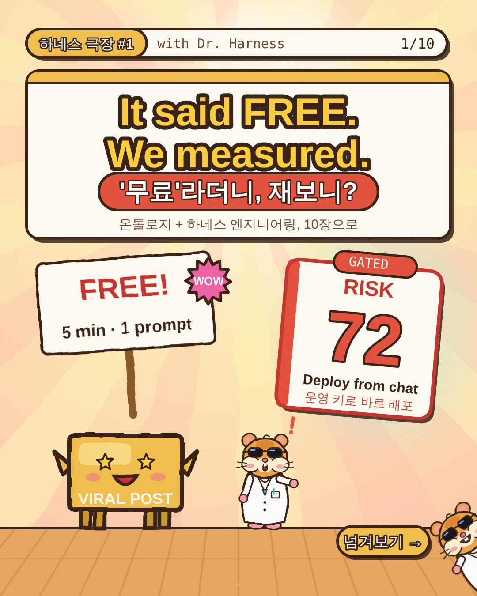
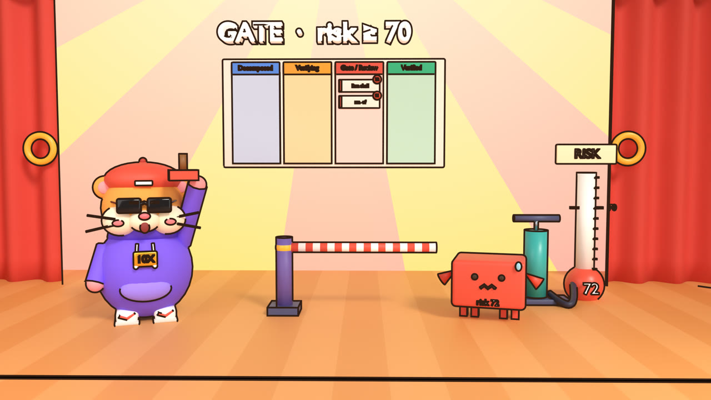
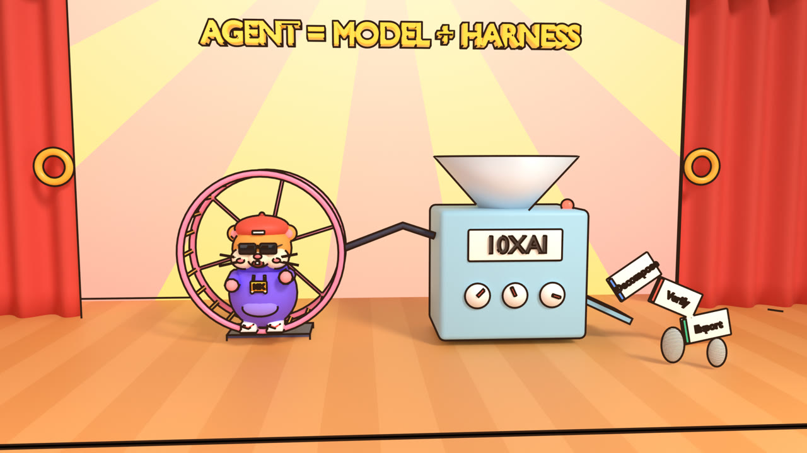
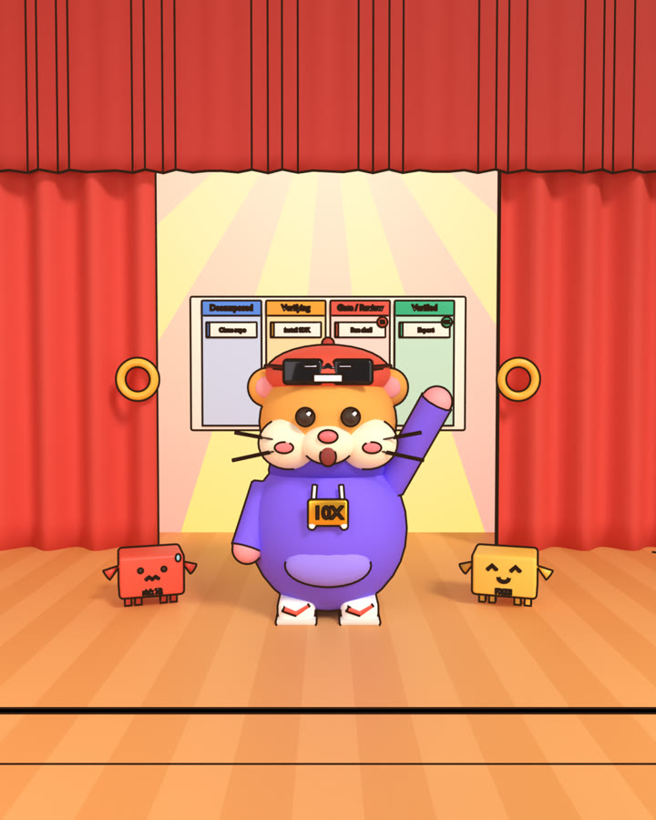

<title>Harness Theater</title>
<link rel="preconnect" href="https://fonts.googleapis.com">
<link rel="preconnect" href="https://fonts.gstatic.com" crossorigin>
<link rel="stylesheet" href="https://fonts.googleapis.com/css2?family=Gaegu:wght@400;700&family=Gowun+Dodum&family=IBM+Plex+Mono:wght@400;500&display=swap">
<link rel="stylesheet" href="series.css">
<style>
.hero{display:grid;grid-template-columns:minmax(0,1fr) minmax(0,1.1fr);gap:32px;align-items:center}
@media (max-width:860px){.hero{grid-template-columns:1fr}}
.shot-frame{margin:0;border:3px solid var(--ink);border-radius:16px;overflow:hidden;box-shadow:6px 7px 0 var(--ink);background:#fff4dc}
.shot-frame img,.shot-frame video{display:block;width:100%;height:auto}
.shot-frame figcaption{font-family:var(--mono);font-size:12px;color:var(--ink-2);padding:8px 12px;border-top:3px solid var(--ink);background:var(--card)}
.hero .shot-frame{transform:rotate(1.2deg)}
.formats{display:grid;grid-template-columns:repeat(3,minmax(0,1fr));gap:22px}
@media (max-width:900px){.formats{grid-template-columns:1fr}}
.fmt{display:flex;flex-direction:column;background:var(--card);border:3px solid var(--ink);border-radius:16px;overflow:hidden;box-shadow:5px 6px 0 var(--ink)}
.fmt .pic{background:#fff4dc;border-bottom:3px solid var(--ink);display:flex;align-items:center;justify-content:center;height:280px;overflow:hidden}
.fmt .pic img{height:100%;width:auto;max-width:100%;object-fit:cover}
.fmt .pic.wide img{width:100%;height:100%}
.fmt .body{padding:16px 18px 18px;display:flex;flex-direction:column;gap:8px;flex:1}
.fmt .tag{align-self:flex-start;font-family:var(--mono);font-size:12px;border:2px solid var(--ink);border-radius:999px;padding:2px 10px}
.fmt h3{font-size:30px;line-height:1}
.fmt p{margin:0;color:var(--ink-2)}
.fmt ul{margin:0;padding-left:18px;font-size:14px}
.fmt .btn{margin-top:auto;align-self:flex-start;font-size:20px;padding:8px 18px}
.gallery{display:grid;grid-template-columns:repeat(2,minmax(0,1fr));gap:22px}
@media (max-width:760px){.gallery{grid-template-columns:1fr}}
.videos{display:grid;grid-template-columns:minmax(0,1.6fr) minmax(0,.9fr);gap:22px;align-items:start}
@media (max-width:860px){.videos{grid-template-columns:1fr}}
.videos .tall{max-width:360px;margin:0 auto;width:100%}
/* production board: the series was made the way 10XAI works, as cards moving across a board */
.pboard{display:grid;grid-template-columns:repeat(5,minmax(0,1fr));gap:12px;overflow-x:auto}
@media (max-width:980px){.pboard{grid-template-columns:repeat(5,minmax(200px,1fr))}}
.pcol{border:3px solid var(--ink);border-radius:12px;background:var(--card);overflow:hidden;min-width:0}
.pcol h4{margin:0;font-family:var(--hand);font-size:22px;padding:6px 12px;border-bottom:3px solid var(--ink);color:#fff;text-shadow:0 2px 0 rgba(0,0,0,.25)}
.pcol ul{list-style:none;margin:0;padding:10px;display:grid;gap:8px}
.pcol li{background:#fff;border:2px solid var(--ink);border-left-width:8px;border-radius:8px;padding:7px 9px;font-size:13px;line-height:1.35}
.pcol li b{display:block;font-family:var(--hand);font-size:17px}
.score{display:flex;align-items:baseline;gap:10px;font-family:var(--hand);font-size:22px}
.score b{font-size:44px;line-height:1}
.subs{display:grid;gap:10px;max-width:760px}
.sub-ex{display:grid;grid-template-columns:minmax(0,1fr) minmax(0,1fr);gap:0;border:3px solid var(--ink);border-radius:12px;overflow:hidden;background:var(--card)}
.sub-ex div{padding:10px 14px}
.sub-ex div+div{border-left:2px dashed var(--line);font-family:var(--hand);font-size:22px;color:#d4432f;font-weight:700}
.sub-ex em{font-style:normal;color:#1f8a6e}
.sub-ex .en{font-family:var(--hand);font-size:21px;font-weight:700}
.sub-ex .en em{color:#e0357a}
@media (max-width:560px){.sub-ex{grid-template-columns:1fr}.sub-ex div+div{border-left:0;border-top:2px dashed var(--line)}}
</style>

<header class="top">
  <div class="wrap hero">
    <div>
      <nav class="series-nav" aria-label="Harness Theater formats">
        <a href="index.html" aria-current="page">Home</a>
        <a href="reels.html">Reel</a>
        <a href="youtube.html">Long-form</a>
        <a href="cardnews.html">Card news</a>
      </nav>
      <div class="eyebrow">10XAI video series · hub</div>
      <h1><span class="hl">Harness Theater</span><small>Ontology + harness engineering, hosted by a hip hamster</small></h1>
      <p class="logline">A viral post says an AI workflow is free. Dr. Harness, a hamster in sunglasses and a gold "10X" chain, pastes it onto a Kanban board run by AI agents and measures it. One idea, told three ways: a 30-second Reel, a 14-minute YouTube deep dive and a 10-slide card news carousel. English voice-over, English + Korean subtitles, bright 3D motion graphics made in Blender.</p>
      <div class="facts"><span>Hook <b>It said FREE. We measured.</b></span><span>KR <b>'무료'라며? 직접 재봤어요</b></span></div>
      <div class="actions"><a class="btn btn-play" href="#watch"><span class="tri" aria-hidden="true"></span>Watch the Reel</a><a class="btn" href="#formats">See all three formats</a></div>
    </div>
    <figure class="shot-frame"><figcaption>Blender render · hero_hamster · Cycles + Freestyle ink lines</figcaption></figure>
  </div>
</header>

<main class="wrap">
  <section id="formats" aria-labelledby="f-h">
    <h2 id="f-h">One idea, three formats</h2>
    <p class="lede">Each page is a full storyboard with drawn frames, English voice-over, Korean subtitles, sound and Blender notes, plus an animatic you can play.</p>
    <div class="formats">
      <article class="fmt">
        <div class="pic"></div>
        <div class="body"><span class="tag" style="background:#ffd23f">Instagram Reel · YouTube Short</span><h3>30-second Reel</h3><p>9:16, 13 shots, payoff-first hook, loop ending.</p><ul><li>Hook: "It said <b>FREE</b>." / "<b>공짜</b>라며?"</li><li>Safe-zone overlay, posting kit, hook alternatives</li><li>Scored by a critic agent, then remade</li></ul><a class="btn" href="reels.html">Open the Reel</a></div>
      </article>
      <article class="fmt">
        <div class="pic wide"></div>
        <div class="body"><span class="tag" style="background:#8fb8ff">YouTube long-form</span><h3>13:53 deep dive</h3><p>16:9, 34 shots in 8 chapters, full script (about 1,930 words).</p><ul><li>Every 10XAI agent gets an introduction</li><li>Screen-recording beats of the real board</li><li>Thumbnails, titles, description, retention plan</li></ul><a class="btn" href="youtube.html">Open the long-form</a></div>
      </article>
      <article class="fmt">
        <div class="pic"></div>
        <div class="body"><span class="tag" style="background:#7fdcb5">Card news · 카드뉴스</span><h3>10-slide carousel</h3><p>4:5, 1080×1350 PNGs ready to upload.</p><ul><li>Cover hook within 15 Korean characters</li><li>Hamster peeks in as the swipe cue</li><li>Caption and hashtags, save and share CTA</li></ul><a class="btn" href="cardnews.html">Open the card news</a></div>
      </article>
    </div>
  </section>

  <section id="watch" aria-labelledby="w-h">
    <h2 id="w-h">Watch</h2>
    <p class="lede">Real video files rendered from this repo. The Reel animatic is filmed frame by frame from the storyboard (drawn on twos, 24 fps file). Mission Control is a 4-second Blender motion-graphics test. Both are silent; the voice-over and music are added in the edit.</p>
    <div class="videos">
      <figure class="shot-frame"><video src="renders/mission_control.mp4" poster="renders/web/hero_kanban.jpg" controls muted loop playsinline preload="metadata" width="1280" height="720"></video><figcaption>Blender · mission_control.mp4 · cards fly across the board, the risky card bounces at the gate</figcaption></figure>
      <figure class="shot-frame tall"><video src="renders/reel-30s.mp4" poster="renders/web/reel_cover.jpg" controls muted playsinline preload="metadata" width="1080" height="1920"></video><figcaption>Animatic · reel-30s.mp4 · 1080×1920</figcaption></figure>
    </div>
  </section>

  <section aria-labelledby="g-h">
    <h2 id="g-h">The 3D set</h2>
    <p class="lede"><code>blender/harness_theater.py</code> builds the stage, the hip hamster rig, the agent crew, the Kanban board, the RISK meter, the gate and the hamster wheel from primitives, then renders with Cycles and Freestyle ink outlines so the 3D matches the drawn storyboards.</p>
    <div class="gallery">
      <figure class="shot-frame"><figcaption>Mission control: the agent crew and the board</figcaption></figure>
      <figure class="shot-frame"><figcaption>The gate: risk ≥ 70 waits for a human</figcaption></figure>
      <figure class="shot-frame"><figcaption>Agent = Model + Harness: the hamster wheel drives the machine</figcaption></figure>
      <figure class="shot-frame"><figcaption>Card news 3D cover variant</figcaption></figure>
    </div>
  </section>

  <section aria-labelledby="p-h">
    <h2 id="p-h">How it was made: a multi-agent production</h2>
    <p class="lede">The series was produced the way 10XAI works. Separate agents researched, built, critiqued and remade the work, and each hand-off is a card on this board.</p>
    <div class="pboard" role="list">
      <div class="pcol" role="listitem"><h4 style="background:#4f8ef7">Research</h4><ul>
        <li style="border-left-color:#4f8ef7"><b>Reels / Shorts</b>Specs, safe zones, hook and loop data (OpusClip, Nielsen, Meta)</li>
        <li style="border-left-color:#4f8ef7"><b>Long-form</b>Retention benchmarks, Kurzgesagt, Fireship, ByteByteGo, 3Blue1Brown</li>
        <li style="border-left-color:#4f8ef7"><b>Card news</b>4:5 with 3:4 grid crop, 뉴닉, 고구마팜, cover within 15 characters</li>
        <li style="border-left-color:#4f8ef7"><b>Korean references</b>조코딩, 안될공학, 잇섭, 뉴닉, 영국남자, 올리버쌤</li></ul></div>
      <div class="pcol" role="listitem"><h4 style="background:#f7a928">Build</h4><ul>
        <li style="border-left-color:#f7a928"><b>Shared kit</b>theater.js, player.js, series.css</li>
        <li style="border-left-color:#f7a928"><b>Reel agent</b>30-second storyboard</li>
        <li style="border-left-color:#f7a928"><b>Long-form agent</b>34 shots, full script</li>
        <li style="border-left-color:#f7a928"><b>Card agent</b>10 slides and PNG export</li></ul></div>
      <div class="pcol" role="listitem"><h4 style="background:#e5533f">Critique</h4><ul>
        <li style="border-left-color:#e5533f"><b>Critic agent</b>Rendered every frame and scored 10 criteria</li>
        <li style="border-left-color:#e5533f"><b>First cut: 5.4 / 10 (C)</b>Wrong payoff in the hook, board off screen, "harness" unclear, 4 Korean lines over 16 characters</li></ul></div>
      <div class="pcol" role="listitem"><h4 style="background:#a86af2">Remake</h4><ul>
        <li style="border-left-color:#a86af2"><b>Hook</b>About FREE, with the deadpan hamster and the board in second 1</li>
        <li style="border-left-color:#a86af2"><b>Harness</b>Seatbelts for agents, split into two beats</li>
        <li style="border-left-color:#a86af2"><b>Loop</b>"다음 공짜 글, 재볼까?" leads back into "공짜라며?"</li>
        <li id="rescore" style="border-left-color:#a86af2"><b>Re-score</b>Pending</li></ul></div>
      <div class="pcol" role="listitem"><h4 style="background:#2fbf8a">Render</h4><ul>
        <li style="border-left-color:#2fbf8a"><b>Blender</b>6 hero stills and the Mission Control clip</li>
        <li style="border-left-color:#2fbf8a"><b>Reel animatic</b>tools/render-reel.cjs → MP4</li>
        <li style="border-left-color:#2fbf8a"><b>Card PNGs</b>tools/render-cardnews.cjs</li></ul></div>
    </div>
  </section>

  <section aria-labelledby="k-h">
    <h2 id="k-h">English voice, Korean subtitles</h2>
    <p class="lede">The hamster speaks English. The Korean line is written as a native caption, not a translation. It stays within 16 characters, uses 반말 and 음슴체 in the Reel and 해요체 in the long-form and card news, and puts the key word in color in both languages. The signature ending "~햄" shows up a few times per piece.</p>
    <div class="subs">
      <div class="sub-ex"><div class="en">It said <em>FREE</em>.</div><div><em>공짜</em>라며?</div></div>
      <div class="sub-ex"><div class="en">We measured.</div><div>직접 재봤햄</div></div>
      <div class="sub-ex"><div class="en"><em>Harness</em> = seatbelts for agents.</div><div><em>하네스</em> = AI 안전벨트</div></div>
      <div class="sub-ex"><div class="en">Over <em>70</em>? It waits for a human.</div><div><em>70점</em> 넘으면 사람 도장 필수</div></div>
      <div class="sub-ex"><div class="en">Claimed <em>free</em>. Measured <em>$0.40</em>.</div><div><em>공짜</em>라며? 실측 <em>$0.40</em></div></div>
    </div>
    <p class="src" style="margin-top:14px">Measured numbers on screen ($0.40, 12 min, risk 72) are placeholders until the creator's own dry run, per the 10XAI rule: claims are reported as claimed vs. measured.</p>
  </section>

  <section aria-labelledby="r-h">
    <h2 id="r-h">Files in the repo</h2>
    <div class="tablewrap"><table>
      <thead><tr><th>Path</th><th>What it is</th></tr></thead>
      <tbody>
        <tr><td><code>docs/video/SERIES.md</code></td><td>Series guide: message, cast, facts, format specs, Korean subtitle style, research sources</td></tr>
        <tr><td><code>docs/video/reels.html</code> · <code>youtube.html</code> · <code>cardnews.html</code></td><td>The three storyboards</td></tr>
        <tr><td><code>docs/video/reels-critique.md</code></td><td>The critic agent's scorecard and remake list</td></tr>
        <tr><td><code>docs/video/theater.js</code> · <code>player.js</code> · <code>series.css</code></td><td>Shared drawing kit, animatic player, page styles</td></tr>
        <tr><td><code>docs/video/blender/harness_theater.py</code></td><td>Blender 3D set, hip hamster rig, hero stills and the animated clip</td></tr>
        <tr><td><code>docs/video/tools/render-reel.cjs</code> · <code>render-cardnews.cjs</code></td><td>Film the Reel to MP4 and export the card PNGs</td></tr>
        <tr><td><code>docs/video/renders/</code> · <code>cardnews/</code></td><td>Rendered stills, videos and slides</td></tr>
      </tbody>
    </table></div>
  </section>
</main>
<footer class="wrap">Harness Theater is a 10XAI series. Characters and sets are original designs. The style reference was the "P(doom) pump" animated clip.</footer>
